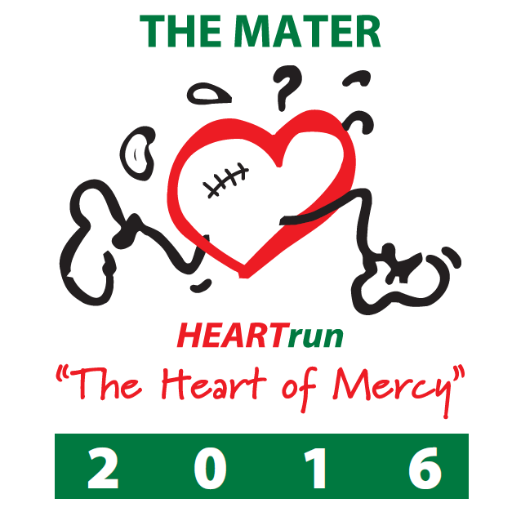

NEWS
Heart Disease seminar
Theme: Valvular Heart Disease: Detecting and Managing Heart Valve Disorders in Primary and Specialist Care Early
Registration: KES. 9, 500
Late Registration: KES. 11, 500, after April 30, 2016
Events
Gitaden will be co hosting this year's heart run. The Heart Run was started in 2004. It’s aim is to assist children from families who cannot afford the cost of cardiac surgery.
In 2007 The Mater Hospital took up the initiative and renamed the run “The Mater Heart Run” and continues to sponsor the run to date. This is an annual event that has caught the imagination of many Kenyans.
Since it started, over 2,500 children have had cardiac procedures performed and over 50,000 others have been screened for heart ailments.